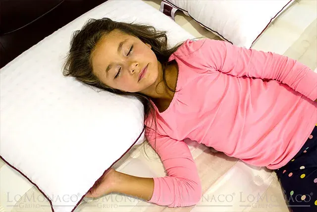

Mi hijo se destapa mientras duerme ¿Qué puedo hacer?

El pediatra Jesús Garrido del blog de salud infantil y pediatría, Mi Pediatra Online, nos explica como hay una constante en las consultas de los padres y madres, que le llegan a través de internet y que siempre preguntan ¿qué hacer si mi hijo se destapa constantemente por la noche? Pensemos en nosotros mismos, seguro que en alguna ocasión te has sorprendido a ti mismo preocupándote porque tu hijo se destapa por la noche pasa frío.
Esta preocupación normal, conforme avanza la madrugada, bajan las temperaturas y por ello se puede llegar a tener una sensación térmica diferente a cuando nos acostamos. Puede ser habitual que hasta nosotros, los padres pasemos frío e incluso decidamos añadir una capa de ropa adicional a nuestra cama. Pero ¿y nuestros hijos? ¿Por qué se destapan? ¿No se resfriarán si duermen destapados?
Una explicación a: “mi hijo se destapa mientras duerme”
Jesús Garrido, quiere aclarar algunos aspectos particulares, que diferencian el sueño de los niños del sueño adulto:
- Los niños tienen un sueño muy activo: Normalmente las personas mientras duermen, se mueven una media de 5 veces a la hora, pero en niños esta cifra es superior. Si observaras a tu hijo mientras duerme, te daría la impresión de que hace cualquier cosa menos descansar. Campan con libertad por su cama o cuna, pesan poco y hay espacio por lo que casi se mueven en todas las orientaciones posibles, y esto nos llama mucho la atención a los adultos. Pretender que acaben durmiendo sobre una almohada y tapados por la sábanas y la manta o edredón nórdico, es labor casi imposible. Lo raro sería que tu hijo no se destapara.
- En las primeras etapas del sueño, muchos niños sudan de forma llamativa.Y no es tengan calor, el pediatra nos lo explica en otro interesante artículo de su blog Mi Pediatra Online: Porqué sudan al dormirse, que resumimos someramente: el cuerpo de los niños se encuentra en una fase de recuperación, y este es uno de los motivos que hacen sudar al organismo humano. Este fenómeno les hace sentirse también acalorados y de nuevo se destapan.
- Realmente a veces pretendemos que duerman más abrigados de lo que necesitan. Como en tantas otras cosas, a veces la idea que los padres tenemos sobre lo que nuestro hijo necesita no se corresponde con la realidad. Una cucharada más, una manga más, una manta más… ¡Más vale que sobre…! Y al final da igual que pongas una más, porque acaba destapándose.
Y el caso es que nuestro niño, se quita las sábanas y el edredón una y otra vez y… se destapa. Cuando vamos al dormitorio a echar un vistazo y ver cómo está pues nos lo encontramos helado. Entonces lo tapamos y ponemos una mantita más “por si acaso”, el niño entonces sí que pasa calor realmente, se pone a sudar, a moverse inquieto y vuelve a destaparse. El sudor se va enfriando, y hace que de nuevo esté helado cuando lo tocamos, y vuelta a empezar…
Precisamente lo que nos preocupa, que nuestro hijo se resfríe es más fácil que ocurra cuando pasa la noche sometido a cambios llamativos de temperatura, como cuando estamos todo el tiempo tapándolo y destapándolo. Porque cuando alguien pasa frío, para ahorrar calor, reduce el riego de sangre en su piel y mucosas, el resultado es que disminuye la capacidad de defenderse.
Jesús Garrido nos ofrece a los padres una solución poco habitual, para no estar vigilando toda la noche si nuestro hijo se destapa.
“¿Y si no lo tapas? Sé que suena raro”. Es la recomendación del pediatra, entendiendo que los niños se mueven mucho y es normal que acaben con la ropa de cama revuelta y destapados sin remedio. Así evitaríamos cambios bruscos de temperatura, que es lo que le perjudica.
La clave estaría en poner al niño la ropa suficiente para dormir, de modo que si se destapa durmiendo no pase frío. ¿Y cuánta ropa debemos poner? Depende de la temperatura que haga (condicionada por la estación del año en la que nos encontremos) y de cada niño. En palabras de Jesús Garrido, “mi sugerencia si tu hijo se destapa constantemente es que duerma sobre el colchón con una sábana y nada más. Y a él ponle los pijamas necesarios para que no pase frío.” Pero que tampoco pase toda la noche sudando (no apliques de nuevo el “más vale que sobre). Observarás que posiblemente sude un poco al dormirse. Pero si el resto de la noche no suda ya de forma llamativa y tampoco está demasiado frío, es que tiene la ropa adecuada.”